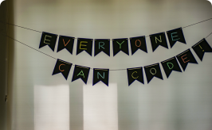

@xkrishguptaa/config-cs-fastn


{ "default-colors-light": { "Accent Colors": { "primary": { "value": "#264de4", "type": "color" }, "secondary": { "value": "#00a86b", "type": "color" }, "tertiary": { "value": "#fe630c", "type": "color" } }, "Background Colors": { "base": { "value": "#f6f8fe", "type": "color" }, "code": { "value": "#ecf0fd", "type": "color" }, "overlay": { "value": "rgba(0, 0, 0, 0.8)", "type": "color" }, "step-1": { "value": "#373943", "type": "color" }, "step-2": { "value": "#202127", "type": "color" } }, "CTA Danger Colors": { "base": { "value": "#ed4245", "type": "color" }, "border": { "value": "#ed4245", "type": "color" }, "border-disabled": { "value": "#9c5455", "type": "color" }, "disabled": { "value": "#9c5455", "type": "color" }, "focused": { "value": "#cf1316", "type": "color" }, "hover": { "value": "#cf1316", "type": "color" }, "pressed": { "value": "#cf1316", "type": "color" }, "text": { "value": "#f6f8fe", "type": "color" }, "text-disabled": { "value": "#ecf0fd", "type": "color" } }, "CTA Primary Colors": { "base": { "value": "#264de4", "type": "color" }, "border": { "value": "#264de4", "type": "color" }, "border-disabled": { "value": "#54639c", "type": "color" }, "disabled": { "value": "#54639c", "type": "color" }, "focused": { "value": "#1a3dc6", "type": "color" }, "hover": { "value": "#1a3dc6", "type": "color" }, "pressed": { "value": "#1a3dc6", "type": "color" }, "text": { "value": "#f6f8fe", "type": "color" }, "text-disabled": { "value": "#ecf0fd", "type": "color" } }, "CTA Secondary Colors": { "base": { "value": "#00a86b", "type": "color" }, "border": { "value": "#00a86b", "type": "color" }, "border-disabled": { "value": "#549c81", "type": "color" }, "disabled": { "value": "#549c81", "type": "color" }, "focused": { "value": "#00a86b", "type": "color" }, "hover": { "value": "#007148", "type": "color" }, "pressed": { "value": "#007148", "type": "color" }, "text": { "value": "#f6f8fe", "type": "color" }, "text-disabled": { "value": "#ecf0fd", "type": "color" } }, "CTA Tertiary Colors": { "base": { "value": "#fe630c", "type": "color" }, "border": { "value": "#fe630c", "type": "color" }, "border-disabled": { "value": "#9c6e54", "type": "color" }, "disabled": { "value": "#9c6e54", "type": "color" }, "focused": { "value": "#d14b00", "type": "color" }, "hover": { "value": "#d14b00", "type": "color" }, "pressed": { "value": "#d14b00", "type": "color" }, "text": { "value": "#f6f8fe", "type": "color" }, "text-disabled": { "value": "#ecf0fd", "type": "color" } }, "Custom Colors": { "eight": { "value": "#ffffff00", "type": "color" }, "five": { "value": "#ffffff00", "type": "color" }, "four": { "value": "#ffffff00", "type": "color" }, "nine": { "value": "#ffffff00", "type": "color" }, "one": { "value": "#ffffff00", "type": "color" }, "seven": { "value": "#ffffff00", "type": "color" }, "six": { "value": "#ffffff00", "type": "color" }, "ten": { "value": "#ffffff00", "type": "color" }, "three": { "value": "#ffffff00", "type": "color" }, "two": { "value": "#ffffff00", "type": "color" } }, "Error Colors": { "base": { "value": "#9c5455", "type": "color" }, "border": { "value": "#9c5455", "type": "color" }, "text": { "value": "#f6f8fe", "type": "color" } }, "Info Colors": { "base": { "value": "#54639c", "type": "color" }, "border": { "value": "#54639c", "type": "color" }, "text": { "value": "#f6f8fe", "type": "color" } }, "Standalone Colors": { "border": { "value": "#202127", "type": "color" }, "border-strong": { "value": "#000000", "type": "color" }, "scrim": { "value": "#1a3dc6", "type": "color" }, "shadow": { "value": "#1a3dc6", "type": "color" }, "text": { "value": "#202127", "type": "color" }, "text-strong": { "value": "#000000", "type": "color" } }, "Success Colors": { "base": { "value": "#549c81", "type": "color" }, "border": { "value": "#549c81", "type": "color" }, "text": { "value": "#f6f8fe", "type": "color" } }, "Warning Colors": { "base": { "value": "#ffffff00", "type": "color" }, "border": { "value": "#f3d000", "type": "color" }, "text": { "value": "#202127", "type": "color" } } }, "default-colors-dark": { "Accent Colors": { "primary": { "value": "#a0b3ff", "type": "color" }, "secondary": { "value": "#2bfdb1", "type": "color" }, "tertiary": { "value": "#fc9256", "type": "color" } }, "Background Colors": { "base": { "value": "#202127", "type": "color" }, "code": { "value": "#222222", "type": "color" }, "overlay": { "value": "rgba(255, 255, 255, 0.8)", "type": "color" }, "step-1": { "value": "#3e404c", "type": "color" }, "step-2": { "value": "#373943", "type": "color" } }, "CTA Danger Colors": { "base": { "value": "#f9e4e1", "type": "color" }, "border": { "value": "#e9968c", "type": "color" }, "border-disabled": { "value": "#65b693", "type": "color" }, "disabled": { "value": "#faeceb", "type": "color" }, "focused": { "value": "#d97973", "type": "color" }, "hover": { "value": "#f1bdb6", "type": "color" }, "pressed": { "value": "#d46a63", "type": "color" }, "text": { "value": "#d84836", "type": "color" }, "text-disabled": { "value": "#65b693", "type": "color" } }, "CTA Primary Colors": { "base": { "value": "#a53006", "type": "color" }, "border": { "value": "#a53006", "type": "color" }, "border-disabled": { "value": "#65b693", "type": "color" }, "disabled": { "value": "#faad7b", "type": "color" }, "focused": { "value": "#611c03", "type": "color" }, "hover": { "value": "#8c2702", "type": "color" }, "pressed": { "value": "#611c03", "type": "color" }, "text": { "value": "#feffff", "type": "color" }, "text-disabled": { "value": "#65b693", "type": "color" } }, "CTA Secondary Colors": { "base": { "value": "#ef8435", "type": "color" }, "border": { "value": "#f3a063", "type": "color" }, "border-disabled": { "value": "#65b693", "type": "color" }, "disabled": { "value": "#fad9c0", "type": "color" }, "focused": { "value": "#b36328", "type": "color" }, "hover": { "value": "#d77730", "type": "color" }, "pressed": { "value": "#bf6a2a", "type": "color" }, "text": { "value": "#ffffff", "type": "color" }, "text-disabled": { "value": "#65b693", "type": "color" } }, "CTA Tertiary Colors": { "base": { "value": "#ebe8e5", "type": "color" }, "border": { "value": "#b0aeac", "type": "color" }, "border-disabled": { "value": "#65b693", "type": "color" }, "disabled": { "value": "#f9f8f7", "type": "color" }, "focused": { "value": "#b0aeac", "type": "color" }, "hover": { "value": "#d4d1ce", "type": "color" }, "pressed": { "value": "#bcbab7", "type": "color" }, "text": { "value": "#333333", "type": "color" }, "text-disabled": { "value": "#65b693", "type": "color" } }, "Custom Colors": { "eight": { "value": "#ffffff00", "type": "color" }, "five": { "value": "#ffffff00", "type": "color" }, "four": { "value": "#ffffff00", "type": "color" }, "nine": { "value": "#ffffff00", "type": "color" }, "one": { "value": "#ffffff00", "type": "color" }, "seven": { "value": "#ffffff00", "type": "color" }, "six": { "value": "#ffffff00", "type": "color" }, "ten": { "value": "#ffffff00", "type": "color" }, "three": { "value": "#ffffff00", "type": "color" }, "two": { "value": "#ffffff00", "type": "color" } }, "Error Colors": { "base": { "value": "#9c5455", "type": "color" }, "border": { "value": "#9c5455", "type": "color" }, "text": { "value": "#f6f8fe", "type": "color" } }, "Info Colors": { "base": { "value": "#54639c", "type": "color" }, "border": { "value": "#54639c", "type": "color" }, "text": { "value": "#f6f8fe", "type": "color" } }, "Standalone Colors": { "border": { "value": "#ffffff", "type": "color" }, "border-strong": { "value": "#f6f8fe", "type": "color" }, "scrim": { "value": "#1a3dc6", "type": "color" }, "shadow": { "value": "#1a3dc6", "type": "color" }, "text": { "value": "#d9d9d9", "type": "color" }, "text-strong": { "value": "#ffffff", "type": "color" } }, "Success Colors": { "base": { "value": "#549c81", "type": "color" }, "border": { "value": "#549c81", "type": "color" }, "text": { "value": "#f6f8fe", "type": "color" } }, "Warning Colors": { "base": { "value": "#ffffff00", "type": "color" }, "border": { "value": "#f3d000", "type": "color" }, "text": { "value": "#f6f8fe", "type": "color" } } } }
The importance of colour in a website’s overall look and feel is well known. The right colour scheme can evoke emotions, create visual interest, and direct a user’s attention to specific elements on a page. That’s why the ftd colour scheme framework provides an easy and powerful way to define colour schemes and apply them to your website.
To start, you can choose from existing colour scheme packages or create your own custom colour scheme. To apply a colour cheme package on top of your package, you’ll need to import it into FASTN.ftd.
Option 1: for documentation templates like doc-site
For example, let’s say you’re using the page component from doc-site package and want to apply the scheme package on top of it.
To add color scheme to your fastn doc-site. Edit your FASTN.ftd file and add color scheme dependency into it.
In the below example, we are using @xkrishguptaa’s color scheme.
Add color scheme dependency into yourFASTN.ftd file as shown in below example:-- fastn.dependency: xkrishguptaa.github.io/config-cs-fastn
Now modify FASTN/ds.ftd module which is already added inside your fastn package.
config-cs-fastn dependency into FASTN/ds.ftd-- import: xkrishguptaa.github.io/config-cs-fastn
Change -- component page colors property ftd.color-scheme colors: $ftd.default-colors with ftd.color-scheme colors: $config-cs-fastn.main
FASTN/ds.ftd file:-- ftd.color-scheme color-scheme: $ftd.default-colors
-- ftd.color-scheme color-scheme: $config-cs-fastn.main
Option 2: for custom fastn projects
Add color scheme dependency into yourFASTN.ftd file as shown in below example:-- fastn.dependency: xkrishguptaa.github.io/<repo_name>
ftd file and import <repo_name> into ftd file-- import: xkrishguptaa.github.io/<repo_name>
Now add $<repo_name>.main to your component, as shown in below example:
ftd file, then deploy and test-- example: This is example of types used from `<repo_name>` -- component example: caption title: ftd.color-scheme color-scheme: $<repo_name>.main -- ftd.text: $example.title role: $inherited.types.heading-hero color: $inherited.colors.text -- end: example